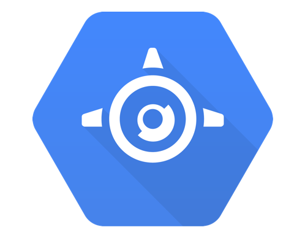
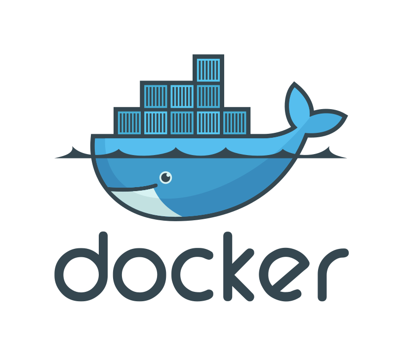

+
+ 
The Dart side of the moon
La face cachée du cloud
+NicolasFrancois / @nicofrancois
+GuillaumeGirou / @GirouGuillaume
Dart
Language
- Class based and object oriented
- Familiar syntax
- Improve maintainability of web applications
- Open Source
- Ecma Standard 408
Platform
- Client and server
- Virtuals Machines
- Dependency manager
- Javascript transpiler
- IDE plugins
Compute Engine
Hello from classic server
lang-dartmain(List<String> args) {
runZoned(() {
HttpServer.bind('0.0.0.0', 80).then((server) {
server.listen((request){
request.response..write("Hello world")
..close();
});
});
}, onError: (e) => print("An error occurred $e"));
}
Handle requests
lang-dartfinal CONTACTS = [{"name": "John Doe",
"urlProfile": "/img/nopic.jpg",
"dateOfBirth": "01-01-1970"}];
handleRequest(HttpRequest request){
if (request.uri.path == '/') {
request.response..write("Hello world")
..close();
} else if (request.uri.path == "/contacts") {
request.response..write(JSON.encode(CONTACTS))
..close();
} else {
request.response..statusCode = HttpStatus.NOT_FOUND
..close();
}
}
Create instance
lang-shgcloud compute instances create "dart-gce-demo" \
--zone "europe-west1-b" \
--machine-type "f1-micro" \
--image "https://www.googleapis.com/compute/v1/projects/debian-cloud/global/images/debian-7-wheezy-v20141021" \
--tags "http-server"
lang-shgcloud compute ssh "dart-gce-demo" --zone "europe-west1-b"
Deployment
lang-sh# Update repository
apt-get update && apt-get install apt-transport-https -y && sh -c 'curl https://dl-ssl.google.com/linux/linux_signing_key.pub | apt-key add -' && sh -c 'curl https://storage.googleapis.com/download.dartlang.org/linux/debian/dart_stable.list > /etc/apt/sources.list.d/dart_stable.list' && apt-get update
lang-sh# Install dart and git
apt-get install dart git -y
lang-sh# Clone and start appp
git clone https://github.com/nfrancois/dart-hello
cd dart-hello
dart bin/server.dart &

Managed VMs
Standard runtime

Custom runtime
Custom runtime
Dockerfile
FROM google/dart-runtime
- pubspec.yaml and pubspec.lock
- bin/server.dart
- 8080
Configuring a Managed VM
app.yaml
lang-yamlversion: 1
runtime: custom
vm: true
manual_scaling:
instances: 1
Hello from appengine
bin/server.dart
lang-dartimport 'dart:io';
import 'package:appengine/appengine.dart';
void main() {
runAppEngine((HttpRequest request) {
request.response
..write('Hello, world!')
..close();
}).then((_) {
// Server running.
context.services.logging.info("AppEngine started...");
});
}
- /_ah/health
- /_ah/start
- /_ah/stop
Run
lang-shgcloud preview app run .
Deploy
lang-shgcloud preview app deploy --server preview.appengine.google.com .
Dart Runtime support
- Datastore
- Storage
- Memcache
- Logging
- Users
Cloud datastore
Store non relationnal data
- Fully managed, schemaless database
- Dart mapping layer
- Dart Low level API
Modelize data
lang-dart@Kind()
class Person extends Model {
@StringProperty(required: true)
String name;
@StringProperty()
String avatarUrl;
@DateTimeProperty()
DateTime dateOfBirth;
}
Store data
lang-dart// Declare list of persons
final john = new Person()..name = 'John Doe';
final jane = new Person()..name = 'Jane Doe';
final List<Person> persons = [john, jane];
// Transforms persons as entities
final List<Entity> entities = persons.map(datastoreDb.modelDB.toDatastoreEntity);
// Insert entities into Datastore
datastoreDb.datastore.commit(inserts: entities).then((_){
print('Data inserted');
});
Query data
Addresses from a person
lang-dartfinal findQuery = new Query(ancestorKey: person.key, kind: 'Address');
datastoreDb.datastore.query(findQuery).then((Page<Entity> page){
print('Found ${page.items.length} items');
});
Cloud storage
Concept
- Service to store data in Google's cloud.
- High Capacity and Scalability.
- Strong Data Consistency.
Terminology
- Buckets are the basic containers that hold your data.
- Objects are the individual pieces of data that you store.
Access
g://<bucket>/<object>
g://images/nopic.jpg
List and create buckets
lang-dartstorage.listBucketNames().listen(print);
lang-dartstorage.bucketExists(bucketName).then((exist){
if(!exist) {
storage.createBucket(bucketName).then((Bucket bucket) {
print('bucket ${bucket.bucketName} is created');
});
}
});
Read and write in documents
lang-dartfinal bucket = storage.bucket(bucketName);
lang-dartbucket.read(userName).listen(print);
lang-dartbucket.writeBytes(userName, avatar).then((ObjectInfo info){
print('${info.name} created.');
});
Polymer
 Polyfills
Polyfills
- Custom element
- HTML Import
- Template
- Shadow DOM
 Core
Core
- Data-binding
- Syntatic sugar
- Change watchers
- Published properties
Polymer's material design elements
Create polymer element
lang-html<link rel="import" href="../../packages/polymer/polymer.html">
<polymer-element name="post-card">
<template>
<div class="card-header" layout horizontal center>
<img alt="Avatar" src="{{person.avatarUrl}}">
<h2>{{person.name}}</h2>
</div>
{{person.dateOfBirth | dateToString}}
</template>
<script type="application/dart" src="post_card.dart"></script>
</polymer-element>
Create polymer element
lang-dartimport 'package:polymer/polymer.dart';
import 'package:intl/intl.dart';
import 'entity.dart';
@CustomTag('post-card')
class PostCard extends PolymerElement {
@observable Person person = new Person()
..name = "John Lennon"
..avatarUrl = "img/avatar.jpg"
..dateOfBirth = new DateTime(1940, 10, 9);
PostCard.created() : super.created();
String dateToString(DateTime date) => new DateFormat.yMd().format(date);
}
Use custom element
lang-html<html>
<head>
<!-- import the hello-world -->
<link rel="import" href="packages/dart/hello_world.html">
</head>
<body>
<!-- use hello-world element -->
<post-card></post-card>
<!-- bootstrap polymer -->
<script type="application/dart">export 'package:polymer/init.dart';</script>
</body>
</html>
John Lennon
9/10/1940